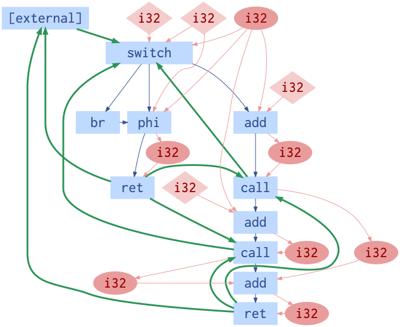

LLVM Environment Reference¶
LLVM is a production-grade compiler used throughout industry. It defines a machine independent intermediate representation (IR), and comprises a family of tools with frontends for C, C++, OpenCL, and many other languages.
CompilerGym exposes the LLVM IR optimizer for reinforcement learning through an
LlvmEnv environment.
Overview:
Installation¶
The LLVM environments are self-installing and work out of the box. A pack of required runtime data is downloaded and cached on first use of the environments.
Datasets¶
We provide several datasets of open-source LLVM-IR benchmarks for use:
Dataset |
Num. Benchmarks 1 |
Description |
Validatable 2 |
|---|---|---|---|
benchmark://anghabench-v1 |
1,041,333 |
Compile-only C/C++ functions extracted from GitHub [Homepage, Paper] |
No |
benchmark://blas-v0 |
300 |
No |
|
benchmark://cbench-v1 |
23 |
Partially |
|
benchmark://chstone-v0 |
12 |
Benchmarks for C-based High-Level Synthesis [Homepage, Paper] |
No |
benchmark://clgen-v0 |
996 |
No |
|
benchmark://github-v0 |
49,738 |
Compile-only C/C++ objects from GitHub [Paper] |
No |
benchmark://linux-v0 |
13,894 |
Compile-only object files from C Linux kernel [Homepage] |
No |
benchmark://mibench-v1 |
40 |
C benchmarks [Paper] |
No |
benchmark://npb-v0 |
122 |
NASA Parallel Benchmarks [Paper] |
No |
benchmark://opencv-v0 |
442 |
Compile-only object files from C++ OpenCV library [Homepage, Paper] |
No |
benchmark://poj104-v1 |
49,816 |
No |
|
benchmark://tensorflow-v0 |
1,985 |
Compile-only object files from C++ TensorFlow library [Homepage, Paper] |
No |
generator://csmith-v0 |
∞ |
No |
|
generator://llvm-stress-v0 |
∞ |
Randomly generated LLVM-IR [Documentation] |
No |
Total |
1,158,701 |
- 1
Values are for the Linux datasets. Some of the datasets contain fewer benchmarks on macOS.
- 2
A validatable dataset is one where the behavior of the benchmarks can be checked by compiling the programs to binaries and executing them. If the benchmarks crash, or are found to have different behavior, then validation fails. This type of validation is used to check that the compiler has not broken the semantics of the program. See
compiler_gym.bin.validate.
All of the above datasets are available for use with the LLVM environment. See compiler_gym.envs.llvm.datasets for API details.
We characterize the datasets below in radial plots which show, clockwise from the top: the average number of instructions per benchmark, the density of branching instructions, the density of arithmetic instructions, and the density of memory operations. For example, comparing blas-v0 and cbench-v1 shows that blas-v0 consists of smaller programs with a similar density of branches, a higher density of arithmetic operations and relatively few memory operations. cbench-v1, in contrast to the small linear algebra kernels of blas-v0, contains larger programs with a higher density of memory operations and fewer arithmetic operations.

Observation Spaces¶
We provide several observation spaces for LLVM based on published compiler research.
LLVM-IR¶
Observation space |
Shape |
|---|---|
Ir |
str_list<>[0,inf]) |
BitcodeFile |
str_list<>[0,4096.0]) |
A serialized representation of the LLVM-IR can be accessed as a string through
the Ir observation space:
>>> env.observation["Ir"]
'; ModuleID = \'benchmark://npb-v0/50\'\n ..."use-soft-float"="false" }\n'
Alternatively the module can be serialized to a bitcode file on disk:
>>> env.observation["BitcodeFile"]
'/home/user/.cache/compiler_gym/service/2020-12-21T11:55:41.716711-6f4f0669/module-5a8b9fcf.bc'
Note
Files generated by the BitcodeFile observation space are put in a
temporary directory that is removed when env.close() is called.
InstCount¶
Observation space |
Shape |
|---|---|
InstCount |
Box(0, 9223372036854775807, (70,), int64) |
InstCountDict |
Dict(AShrCount:int<0,inf>, AddCount:int<0,inf>, AddrSpaceCastCount:int<0,inf>, AllocaCount:int<0,inf>, AndCount:int<0,inf>, AtomicCmpXchgCount:int<0,inf>, AtomicRMWCount:int<0,inf>, BitCastCount:int<0,inf>, BrCount:int<0,inf>, CallBrCount:int<0,inf>, CallCount:int<0,inf>, CatchPadCount:int<0,inf>, CatchRetCount:int<0,inf>, CatchSwitchCount:int<0,inf>, CleanupPadCount:int<0,inf>, CleanupRetCount:int<0,inf>, ExtractElementCount:int<0,inf>, ExtractValueCount:int<0,inf>, FAddCount:int<0,inf>, FCmpCount:int<0,inf>, FDivCount:int<0,inf>, FMulCount:int<0,inf>, FNegCount:int<0,inf>, FPExtCount:int<0,inf>, FPToSICount:int<0,inf>, FPToUICount:int<0,inf>, FPTruncCount:int<0,inf>, FRemCount:int<0,inf>, FSubCount:int<0,inf>, FenceCount:int<0,inf>, FreezeCount:int<0,inf>, GetElementPtrCount:int<0,inf>, ICmpCount:int<0,inf>, IndirectBrCount:int<0,inf>, InsertElementCount:int<0,inf>, InsertValueCount:int<0,inf>, IntToPtrCount:int<0,inf>, InvokeCount:int<0,inf>, LShrCount:int<0,inf>, LandingPadCount:int<0,inf>, LoadCount:int<0,inf>, MulCount:int<0,inf>, OrCount:int<0,inf>, PHICount:int<0,inf>, PtrToIntCount:int<0,inf>, ResumeCount:int<0,inf>, RetCount:int<0,inf>, SDivCount:int<0,inf>, SExtCount:int<0,inf>, SIToFPCount:int<0,inf>, SRemCount:int<0,inf>, SelectCount:int<0,inf>, ShlCount:int<0,inf>, ShuffleVectorCount:int<0,inf>, StoreCount:int<0,inf>, SubCount:int<0,inf>, SwitchCount:int<0,inf>, TotalBlocksCount:int<0,inf>, TotalFuncsCount:int<0,inf>, TotalInstsCount:int<0,inf>, TruncCount:int<0,inf>, UDivCount:int<0,inf>, UIToFPCount:int<0,inf>, URemCount:int<0,inf>, UnreachableCount:int<0,inf>, UserOp1Count:int<0,inf>, UserOp2Count:int<0,inf>, VAArgCount:int<0,inf>, XorCount:int<0,inf>, ZExtCount:int<0,inf>) |
InstCountNorm |
Box(0.0, 1.0, (69,), float32) |
InstCountNormDict |
Dict(AShrDensity:int<0,inf>, AddDensity:int<0,inf>, AddrSpaceCastDensity:int<0,inf>, AllocaDensity:int<0,inf>, AndDensity:int<0,inf>, AtomicCmpXchgDensity:int<0,inf>, AtomicRMWDensity:int<0,inf>, BitCastDensity:int<0,inf>, BrDensity:int<0,inf>, CallBrDensity:int<0,inf>, CallDensity:int<0,inf>, CatchPadDensity:int<0,inf>, CatchRetDensity:int<0,inf>, CatchSwitchDensity:int<0,inf>, CleanupPadDensity:int<0,inf>, CleanupRetDensity:int<0,inf>, ExtractElementDensity:int<0,inf>, ExtractValueDensity:int<0,inf>, FAddDensity:int<0,inf>, FCmpDensity:int<0,inf>, FDivDensity:int<0,inf>, FMulDensity:int<0,inf>, FNegDensity:int<0,inf>, FPExtDensity:int<0,inf>, FPToSIDensity:int<0,inf>, FPToUIDensity:int<0,inf>, FPTruncDensity:int<0,inf>, FRemDensity:int<0,inf>, FSubDensity:int<0,inf>, FenceDensity:int<0,inf>, FreezeDensity:int<0,inf>, GetElementPtrDensity:int<0,inf>, ICmpDensity:int<0,inf>, IndirectBrDensity:int<0,inf>, InsertElementDensity:int<0,inf>, InsertValueDensity:int<0,inf>, IntToPtrDensity:int<0,inf>, InvokeDensity:int<0,inf>, LShrDensity:int<0,inf>, LandingPadDensity:int<0,inf>, LoadDensity:int<0,inf>, MulDensity:int<0,inf>, OrDensity:int<0,inf>, PHIDensity:int<0,inf>, PtrToIntDensity:int<0,inf>, ResumeDensity:int<0,inf>, RetDensity:int<0,inf>, SDivDensity:int<0,inf>, SExtDensity:int<0,inf>, SIToFPDensity:int<0,inf>, SRemDensity:int<0,inf>, SelectDensity:int<0,inf>, ShlDensity:int<0,inf>, ShuffleVectorDensity:int<0,inf>, StoreDensity:int<0,inf>, SubDensity:int<0,inf>, SwitchDensity:int<0,inf>, TotalBlocksDensity:int<0,inf>, TotalFuncsDensity:int<0,inf>, TruncDensity:int<0,inf>, UDivDensity:int<0,inf>, UIToFPDensity:int<0,inf>, URemDensity:int<0,inf>, UnreachableDensity:int<0,inf>, UserOp1Density:int<0,inf>, UserOp2Density:int<0,inf>, VAArgDensity:int<0,inf>, XorDensity:int<0,inf>, ZExtDensity:int<0,inf>) |
The InstCount observation space is a 70-dimension integer feature vector in the range [0,∞]. The first three features are the total number of instructions, the total number of basic blocks, and the total number of functions. The remaining features are the number of instructions of each of the 67 different types in the program.
Use the InstCount observation space to access the feature vectors as an
np.array,
and InstCountDict to receive them as a self-documented dictionary, keyed
by the name of each feature.
The table below provides a description of each of the 70 features, with the
index in which they appear in the InstCount and InstCountNorm
spaces, and their name as they appear in the keys of the InstCountDict
and InstCountNormDict spaces. See the LLVM instruction reference for the meaning of
the counted instructions.
Index |
Name |
Description |
|---|---|---|
0 |
TotalInsts |
Total instruction count |
1 |
TotalBlocks |
Basic block count |
2 |
TotalFuncs |
Function count |
3 |
Ret |
Ret instruction count |
4 |
Br |
Br instruction count |
5 |
Switch |
Switch instruction count |
6 |
IndirectBr |
IndirectBr instruction count |
7 |
Invoke |
Invoke instruction count |
8 |
Resume |
Resume instruction count |
9 |
Unreachable |
Unreachable instruction count |
10 |
CleanupRet |
CleanupRet instruction count |
11 |
CatchRet |
CatchRet instruction count |
12 |
CatchSwitch |
CatchSwitch instruction count |
13 |
CallBr |
CallBr instruction count |
14 |
FNeg |
FNeg instruction count |
15 |
Add |
Add instruction count |
16 |
FAdd |
FAdd instruction count |
17 |
Sub |
Sub instruction count |
18 |
FSub |
FSub instruction count |
19 |
Mul |
Mul instruction count |
20 |
FMul |
FMul instruction count |
21 |
UDiv |
UDiv instruction count |
22 |
SDiv |
SDiv instruction count |
23 |
FDiv |
FDiv instruction count |
24 |
URem |
URem instruction count |
25 |
SRem |
SRem instruction count |
26 |
FRem |
FRem instruction count |
27 |
Shl |
Shl instruction count |
28 |
LShr |
LShr instruction count |
29 |
AShr |
AShr instruction count |
30 |
And |
And instruction count |
31 |
Or |
Or instruction count |
32 |
Xor |
Xor instruction count |
33 |
Alloca |
Alloca instruction count |
34 |
Load |
Load instruction count |
35 |
Store |
Store instruction count |
36 |
GetElementPtr |
GetElementPtr instruction count |
37 |
Fence |
Fence instruction count |
38 |
AtomicCmpXchg |
AtomicCmpXchg instruction count |
39 |
AtomicRMW |
AtomicRMW instruction count |
40 |
Trunc |
Trunc instruction count |
41 |
ZExt |
ZExt instruction count |
42 |
SExt |
SExt instruction count |
43 |
FPToUI |
FPToUI instruction count |
44 |
FPToSI |
FPToSI instruction count |
45 |
UIToFP |
UIToFP instruction count |
46 |
SIToFP |
SIToFP instruction count |
47 |
FPTrunc |
FPTrunc instruction count |
48 |
FPExt |
FPExt instruction count |
49 |
PtrToInt |
PtrToInt instruction count |
50 |
IntToPtr |
IntToPtr instruction count |
51 |
BitCast |
BitCast instruction count |
52 |
AddrSpaceCast |
AddrSpaceCast instruction count |
53 |
CleanupPad |
CleanupPad instruction count |
54 |
CatchPad |
CatchPad instruction count |
55 |
ICmp |
ICmp instruction count |
56 |
FCmp |
FCmp instruction count |
57 |
PHI |
PHI instruction count |
58 |
Call |
Call instruction count |
59 |
Select |
Select instruction count |
60 |
UserOp1 |
UserOp1 instruction count |
61 |
UserOp2 |
UserOp2 instruction count |
62 |
VAArg |
VAArg instruction count |
63 |
ExtractElement |
ExtractElement instruction count |
64 |
InsertElement |
InsertElement instruction count |
65 |
ShuffleVector |
ShuffleVector instruction count |
66 |
ExtractValue |
ExtractValue instruction count |
67 |
InsertValue |
InsertValue instruction count |
68 |
LandingPad |
LandingPad instruction count |
69 |
Freeze |
Freeze instruction count |
Example values:
>>> env.observation["InstCount"]
array([406198, 46981, 3795, 3712, 41629, 1489, 0, 0,
0, 151, 0, 0, 0, 0, 49, 5393,
301, 3548, 157, 1132, 748, 152, 296, 270,
42, 72, 0, 1228, 408, 1251, 2433, 878,
1022, 22963, 107948, 53284, 59136, 0, 0, 0,
2815, 7711, 3082, 14, 327, 16, 566, 328,
888, 844, 0, 32345, 0, 0, 0, 14341,
682, 1622, 30668, 257, 0, 0, 0, 0,
0, 0, 0, 0, 0, 0])
>>> env.observation["InstCountDict"]
{'TotalInstsCount': 406198, 'TotalBlocksCount': 46981, 'TotalFuncsCount':
3795, 'RetCount': 3712, 'BrCount': 41629, 'SwitchCount': 1489,
'IndirectBrCount': 0, 'InvokeCount': 0, 'ResumeCount': 0,
'UnreachableCount': 151, 'CleanupRetCount': 0, 'CatchRetCount': 0,
'CatchSwitchCount': 0, 'CallBrCount': 0, 'FNegCount': 49, 'AddCount': 5393,
'FAddCount': 301, 'SubCount': 3548, 'FSubCount': 157, 'MulCount': 1132,
'FMulCount': 748, 'UDivCount': 152, 'SDivCount': 296, 'FDivCount': 270,
'URemCount': 42, 'SRemCount': 72, 'FRemCount': 0, 'ShlCount': 1228,
'LShrCount': 408, 'AShrCount': 1251, 'AndCount': 2433, 'OrCount': 878,
'XorCount': 1022, 'AllocaCount': 22963, 'LoadCount': 107948, 'StoreCount':
53284, 'GetElementPtrCount': 59136, 'FenceCount': 0, 'AtomicCmpXchgCount':
0, 'AtomicRMWCount': 0, 'TruncCount': 2815, 'ZExtCount': 7711, 'SExtCount':
3082, 'FPToUICount': 14, 'FPToSICount': 327, 'UIToFPCount': 16,
'SIToFPCount': 566, 'FPTruncCount': 328, 'FPExtCount': 888, 'PtrToIntCount':
844, 'IntToPtrCount': 0, 'BitCastCount': 32345, 'AddrSpaceCastCount': 0,
'CleanupPadCount': 0, 'CatchPadCount': 0, 'ICmpCount': 14341, 'FCmpCount':
682, 'PHICount': 1622, 'CallCount': 30668, 'SelectCount': 257,
'UserOp1Count': 0, 'UserOp2Count': 0, 'VAArgCount': 0,
'ExtractElementCount': 0, 'InsertElementCount': 0, 'ShuffleVectorCount': 0,
'ExtractValueCount': 0, 'InsertValueCount': 0, 'LandingPadCount': 0,
'FreezeCount': 0}
The derived spaces InstCountNorm and InstCountNormDict return
the instruction counts normalized to the total number of instructions (index 0
in the table above). The first feature is omitted, yield a 69-dimensionality
feature vector:
>>> env.observation["InstCountNorm"]
array([1.1566034e-01, 9.3427347e-03, 9.1384007e-03, 1.0248450e-01,
3.6657001e-03, 0.0000000e+00, 0.0000000e+00, 0.0000000e+00,
3.7173988e-04, 0.0000000e+00, 0.0000000e+00, 0.0000000e+00,
0.0000000e+00, 1.2063082e-04, 1.3276776e-02, 7.4101792e-04,
8.7346565e-03, 3.8651100e-04, 2.7868182e-03, 1.8414665e-03,
3.7420174e-04, 7.2870863e-04, 6.6470046e-04, 1.0339785e-04,
1.7725346e-04, 0.0000000e+00, 3.0231562e-03, 1.0044363e-03,
3.0797787e-03, 5.9896898e-03, 2.1615075e-03, 2.5160143e-03,
5.6531545e-02, 2.6575217e-01, 1.3117741e-01, 1.4558417e-01,
0.0000000e+00, 0.0000000e+00, 0.0000000e+00, 6.9301180e-03,
1.8983353e-02, 7.5874329e-03, 3.4465949e-05, 8.0502609e-04,
3.9389659e-05, 1.3934091e-03, 8.0748799e-04, 2.1861261e-03,
2.0778044e-03, 0.0000000e+00, 7.9628654e-02, 0.0000000e+00,
0.0000000e+00, 0.0000000e+00, 3.5305440e-02, 1.6789841e-03,
3.9931266e-03, 7.5500123e-02, 6.3269638e-04, 0.0000000e+00,
0.0000000e+00, 0.0000000e+00, 0.0000000e+00, 0.0000000e+00,
0.0000000e+00, 0.0000000e+00, 0.0000000e+00, 0.0000000e+00,
0.0000000e+00], dtype=float32)
>>> math.isclose(env.observation["InstCountNorm"][2:].sum(), 1)
True
The InstCount observation space and its derivatives are cheap to compute, deterministic, and platform independent.
Autophase¶
Observation space |
Shape |
|---|---|
Autophase |
Box(0, 9223372036854775807, (56,), int64) |
AutophaseDict |
Dict(ArgsPhi:int<0,inf>, BB03Phi:int<0,inf>, BBHiPhi:int<0,inf>, BBNoPhi:int<0,inf>, BBNumArgsHi:int<0,inf>, BBNumArgsLo:int<0,inf>, BeginPhi:int<0,inf>, BlockLow:int<0,inf>, BlockMid:int<0,inf>, BranchCount:int<0,inf>, CriticalCount:int<0,inf>, NumAShrInst:int<0,inf>, NumAddInst:int<0,inf>, NumAllocaInst:int<0,inf>, NumAndInst:int<0,inf>, NumBitCastInst:int<0,inf>, NumBrInst:int<0,inf>, NumCallInst:int<0,inf>, NumEdges:int<0,inf>, NumGetElementPtrInst:int<0,inf>, NumICmpInst:int<0,inf>, NumLShrInst:int<0,inf>, NumLoadInst:int<0,inf>, NumMulInst:int<0,inf>, NumOrInst:int<0,inf>, NumPHIInst:int<0,inf>, NumRetInst:int<0,inf>, NumSExtInst:int<0,inf>, NumSelectInst:int<0,inf>, NumShlInst:int<0,inf>, NumStoreInst:int<0,inf>, NumSubInst:int<0,inf>, NumTruncInst:int<0,inf>, NumXorInst:int<0,inf>, NumZExtInst:int<0,inf>, TotalBlocks:int<0,inf>, TotalFuncs:int<0,inf>, TotalInsts:int<0,inf>, TotalMemInst:int<0,inf>, UncondBranches:int<0,inf>, binaryConstArg:int<0,inf>, const32Bit:int<0,inf>, const64Bit:int<0,inf>, morePreds:int<0,inf>, numConstOnes:int<0,inf>, numConstZeroes:int<0,inf>, onePred:int<0,inf>, onePredOneSuc:int<0,inf>, onePredTwoSuc:int<0,inf>, oneSuccessor:int<0,inf>, returnInt:int<0,inf>, testUnary:int<0,inf>, twoEach:int<0,inf>, twoPred:int<0,inf>, twoPredOneSuc:int<0,inf>, twoSuccessor:int<0,inf>) |
The Autophase observation space is a 56-dimension integer feature vector summarizing the static LLVM-IR representation. It is described in:
Haj-Ali, A., Huang, Q. J., Xiang, J., Moses, W., Asanovic, K., Wawrzynek, J., & Stoica, I. (2020). AutoPhase: Juggling HLS phase orderings in random forests with deep reinforcement learning. Proceedings of Machine Learning and Systems, 2, 70-81.
Use the Autophase observation space to access the feature vectors as an
np.array,
and AutophaseDict to receive them as a self-documented dictionary, keyed
by the name of each feature.
The table below provides a description of each of the 56 features, with the
index in which they appear in the Autophase vector, and their name as
they appear in the keys of the AutophaseDict dictionary.
Index |
Name |
Description |
|---|---|---|
0 |
BBNumArgsHi |
Number of BB where total args for phi nodes is gt 5 |
1 |
BBNumArgsLo |
Number of BB where total args for phi nodes is [1, 5] |
2 |
onePred |
Number of basic blocks with 1 predecessor |
3 |
onePredOneSuc |
Number of basic blocks with 1 predecessor and 1 successor |
4 |
onePredTwoSuc |
Number of basic blocks with 1 predecessor and 2 successors |
5 |
oneSuccessor |
Number of basic blocks with 1 successor |
6 |
twoPred |
Number of basic blocks with 2 predecessors |
7 |
twoPredOneSuc |
Number of basic blocks with 2 predecessors and 1 successor |
8 |
twoEach |
Number of basic blocks with 2 predecessors and successors |
9 |
twoSuccessor |
Number of basic blocks with 2 successors |
10 |
morePreds |
Number of basic blocks with gt. 2 predecessors |
11 |
BB03Phi |
Number of basic blocks with Phi node count in range (0, 3] |
12 |
BBHiPhi |
Number of basic blocks with more than 3 Phi nodes |
13 |
BBNoPhi |
Number of basic blocks with no Phi nodes |
14 |
BeginPhi |
Number of Phi-nodes at beginning of BB |
15 |
BranchCount |
Number of branches |
16 |
returnInt |
Number of calls that return an int |
17 |
CriticalCount |
Number of critical edges |
18 |
NumEdges |
Number of edges |
19 |
const32Bit |
Number of occurrences of 32-bit integer constants |
20 |
const64Bit |
Number of occurrences of 64-bit integer constants |
21 |
numConstZeroes |
Number of occurrences of constant 0 |
22 |
numConstOnes |
Number of occurrences of constant 1 |
23 |
UncondBranches |
Number of unconditional branches |
24 |
binaryConstArg |
Binary operations with a constant operand |
25 |
NumAShrInst |
Number of AShr instructions |
26 |
NumAddInst |
Number of Add instructions |
27 |
NumAllocaInst |
Number of Alloca instructions |
28 |
NumAndInst |
Number of And instructions |
29 |
BlockMid |
Number of basic blocks with instructions between [15, 500] |
30 |
BlockLow |
Number of basic blocks with less than 15 instructions |
31 |
NumBitCastInst |
Number of BitCast instructions |
32 |
NumBrInst |
Number of Br instructions |
33 |
NumCallInst |
Number of Call instructions |
34 |
NumGetElementPtrInst |
Number of GetElementPtr instructions |
35 |
NumICmpInst |
Number of ICmp instructions |
36 |
NumLShrInst |
Number of LShr instructions |
37 |
NumLoadInst |
Number of Load instructions |
38 |
NumMulInst |
Number of Mul instructions |
39 |
NumOrInst |
Number of Or instructions |
40 |
NumPHIInst |
Number of PHI instructions |
41 |
NumRetInst |
Number of Ret instructions |
42 |
NumSExtInst |
Number of SExt instructions |
43 |
NumSelectInst |
Number of Select instructions |
44 |
NumShlInst |
Number of Shl instructions |
45 |
NumStoreInst |
Number of Store instructions |
46 |
NumSubInst |
Number of Sub instructions |
47 |
NumTruncInst |
Number of Trunc instructions |
48 |
NumXorInst |
Number of Xor instructions |
49 |
NumZExtInst |
Number of ZExt instructions |
50 |
TotalBlocks |
Number of basic blocks |
51 |
TotalInsts |
Number of instructions (of all types) |
52 |
TotalMemInst |
Number of memory instructions |
53 |
TotalFuncs |
Number of non-external functions |
54 |
ArgsPhi |
Total arguments to Phi nodes |
55 |
testUnary |
Number of Unary operations |
Example values:
>>> env.observation["Autophase"]
array([ 0, 0, 26, 25, 1, 26, 10, 1, 8, 10, 0,
0, 0, 37, 0, 36, 0, 2, 46, 175, 1664, 1212,
263, 26, 193, 0, 59, 6, 0, 3, 32, 0, 36,
10, 1058, 10, 0, 840, 0, 0, 0, 1, 416, 0,
0, 148, 60, 0, 0, 0, 37, 3008, 2062, 9, 0,
1262])
>>> env.observation["AutophaseDict"]
{'BBNumArgsHi': 0, 'BBNumArgsLo': 0, 'onePred': 26, 'onePredOneSuc': 25,
'onePredTwoSuc': 1, 'oneSuccessor': 26, 'twoPred': 10, 'twoPredOneSuc': 1,
'twoEach': 8, 'twoSuccessor': 10, 'morePreds': 0, 'BB03Phi': 0,
'BBHiPhi': 0, 'BBNoPhi': 37, 'BeginPhi': 0, 'BranchCount': 36,
'returnInt': 0, 'CriticalCount': 2, 'NumEdges': 46, 'const32Bit': 175,
'const64Bit': 1664, 'numConstZeroes': 1212, 'numConstOnes': 263,
'UncondBranches': 26, 'binaryConstArg': 193, 'NumAShrInst': 0,
'NumAddInst': 59, 'NumAllocaInst': 6, 'NumAndInst': 0, 'BlockMid': 3,
'BlockLow': 32, 'NumBitCastInst': 0, 'NumBrInst': 36, 'NumCallInst': 10, ... }
Inst2vec¶
Observation space |
Shape |
|---|---|
Inst2vec |
ndarray_list<>[0,inf]) |
Inst2vecEmbeddingIndices |
int32_list<>[0,inf]) |
Inst2vecPreprocessedText |
str_list<>[0,inf]) |
The inst2vec observation space represents LLVM-IR as sequence of embedding vectors, one per LLVM statement, using embeddings trained offline on a large corpus of LLVM-IR. It is described in:
Ben-Nun, T., Jakobovits, A. S., & Hoefler, T. (2018). Neural code comprehension: A learnable representation of code semantics. In Advances in Neural Information Processing Systems (pp. 3585-3597).
The inst2vec methodology comprises three steps, all of which are exposed as observation spaces:
Step 1: pre-processing
The LLVM-IR statements are pre-processed to remove literals, identifiers, and simplify the expressions. Using the Inst2vecPreprocessedText observation space returns a list of pre-processed strings, one per statement. It could be useful if you want to normalize the IR but then do your own embedding.
>>> env.observation["Inst2vecPreprocessedText"]
['opaque = type opaque', ..., 'ret i32 <%ID>']
Step 2: encoding
Each of the pre-processed statements is mapped to an index into a vocabulary of over 8k LLVM-IR statements. If a statement is not found in the vocabulary, it maps to a special !UNK vocabulary item. Using the Inst2vecEmbeddingIndices observation space returns a list of vocabulary indices. This would be useful if you want to learn your own embeddings using the same vocabulary, or if you want to use the inst2vec pre-trained embeddings but are processing them on a GPU where you have already allocated and copied the embedding table, minimizing transfer sizes.
>>> env.observation["Inst2vecEmbeddingIndices"]
[8564, 8564, 5, 46, ..., 257]
Step 3: embedding
The vocabulary indices are mapped to 200-D embedding vectors, producing an np.array of shape (num_statements, 200). This could be fed into an LSTM to produce a program embedding.
>>> env.observation["Inst2vec"]
array([[-0.26956588, 0.47407162, -0.36637706, ..., -0.49256894,
0.8016193 , 0.71160674],
[-0.59749085, 0.63315004, -0.0308373 , ..., 0.14833118,
0.86420786, 0.44808227],
[-0.59749085, 0.63315004, -0.0308373 , ..., 0.14833118,
0.86420786, 0.44808227],
...,
[-0.37584195, 0.43671703, -0.5360456 , ..., 0.6030259 ,
0.82574934, 0.6306344 ],
[-0.59749085, 0.63315004, -0.0308373 , ..., 0.14833118,
0.86420786, 0.44808227],
[-0.43074277, 0.8589559 , -0.35770646, ..., 0.28785184,
0.8492773 , 0.8914213 ]], dtype=float32)
ProGraML¶
Observation space |
Shape |
|---|---|
Programl |
str_list<>[0,inf]) -> json://networkx/MultiDiGraph |
The ProGraML representation is a graph-based representation of LLVM-IR which includes control-flow, data-flow, and call-flow. This graph is represented as an nx.MultiDiGraph. ProGraML is described in:
Cummins, C., Fisches, Z. V., Ben-Nun, T., Hoefler, T., & Leather, H. (2020). ProGraML: Graph-based Deep Learning for Program Optimization and Analysis. arXiv preprint arXiv:2003.10536.
Each node in the graph represents an instruction, a variable, or a constant. A text attribute on each node can be used to produce an initial node embedding. Each edge in the graph has a type and a position. There are three types of edges: call edges, data edges, and control edges. An edge position is a positive integer which encodes the operand order for data edges and the branch number for control edges. The diagram below visualizes the ProGraML graph for a small program.
In the above diagram, each blue rectangular node represents an instruction, the red diamonds are variables, the red ovals are constants, and the edges between the nodes represent relations: blue edges are control flow, red edges are data flow, and green edges are call flow.
Example usage:
>>> G = env.observation["Programl"]
>>> G
<networkx.classes.multidigraph.MultiDiGraph object at 0x7f9d8050ffa0>
>>> G.number_of_nodes()
6326
>>> G.nodes[1000]
{'block': 8, 'features': {'full_text': ['%439 = load double, double* @tmp2, align 8']}, 'function': 0, 'text': 'load', 'type': 0}
>>> G.edge[0, 1, 0]
{'flow': 2, 'position': 0}
Hardware Information¶
Observation space |
Shape |
|---|---|
CpuInfo |
Dict(cores_count:int, l1d_cache_count:int, l1d_cache_size:int, l1i_cache_count:int, l1i_cache_size:int, l2_cache_count:int, l2_cache_size:int, l3_cache_count:int, l3_cache_size:int, l4_cache_count:int, l4_cache_size:int, name:str_list<>[0,inf])) |
Essential performance information about the host CPU can be accessed as JSON dictionary, extracted using the cpuinfo library.
This observation space is used for obtaining information about the target hardware. The values are independent of the compiler and program state.
Example usage:
>>> env.observation["CpuInfo"]
{'cores_count': 8, 'l1d_cache_count': 8, ...}
Cost Models¶
Observation space |
Shape |
|---|---|
IrInstructionCount |
Box(0, 9223372036854775807, (1,), int64) |
IrInstructionCountO0 |
Box(0, 9223372036854775807, (1,), int64) |
IrInstructionCountO3 |
Box(0, 9223372036854775807, (1,), int64) |
IrInstructionCountOz |
Box(0, 9223372036854775807, (1,), int64) |
ObjectTextSizeBytes |
Box(0, 9223372036854775807, (1,), int64) |
ObjectTextSizeO0 |
Box(0, 9223372036854775807, (1,), int64) |
ObjectTextSizeO3 |
Box(0, 9223372036854775807, (1,), int64) |
ObjectTextSizeOz |
Box(0, 9223372036854775807, (1,), int64) |
Raw values from the cost models used to compute rewards.
Runtime¶
🏗️ Experimental API: This runtime observation space is still in an experimental state and is not yet stable. There may be bugs and breaking changes in future releases.
Observation space |
Shape |
|---|---|
IsRunnable |
int<0,1> |
Runtime |
float64_list<>[0,inf]) |
Compile and run the benchmark, returning a list of wall-clock execution times.
Times are returned as floating point second values. The number of times that the
benchmark is executed is determined by the
LlvmEnv.runtime_observation_count property.
Not all benchmarks are runnable. To check if the current benchmark is runnable,
use the IsRunnable observation space, that is 1 if the benchmark
is runnable, else 0. Requesting the Runtime observation space
for a benchmark that is not runnable will return an empty list.
Build Time¶
🏗️ Experimental API: This compiler time observation space is still in an experimental state and is not yet stable. There may be bugs and breaking changes in future releases.
Observation space |
Shape |
|---|---|
IsBuildable |
int<0,1> |
Buildtime |
float64_list<>[0,inf]) |
Compile the benchmark to a binary and return a list of a single wall-clock build time as seconds.
Not all benchmarks are build. To check if the current benchmark is buildable,
use the IsBuildable observation space, that is 1 if the
benchmark is buildable, else 0. Requesting the Buildtime
observation space for a benchmark that is not buildable will return an empty
list.
Reward Spaces¶
The goal of CompilerGym tasks is to minimize a cost function \(C(s)\) which takes as input the current program state \(s\) and produces a real-valued cost. At a given timestep, reward is the reduction in cost from the previous state \(s_{t-1}\) to the current state \(s_t\):
Reward can be normalized using the cost of the program before any optimizations are applied as the scaling factor:
Normalized rewards are indicated by a Norm suffix on the reward space
name.
Alternatively, rewards can be normalized by comparison to a baseline policy. The
baseline policies are derived from existing
LLVM optimization levels:
-O3, and -Oz. When a baseline policy is used, reward is the
reduction in cost from the previous state, scaled by the reduction in cost
achieved by applying the baseline policy to produce a baseline state
\(s_b\):
These reward spaces are indicated by the baseline policy name as a suffix, e.g.
the reward space IrInstructionCountO3 is IrInstructionCount
reward normalized to the -O3 baseline policy.
IR Instruction Count¶
Reward space |
Baseline Policy |
Range |
Success Threshold |
Deterministic? |
Platform dependent? |
|---|---|---|---|---|---|
IrInstructionCount |
(-inf, inf) |
Yes |
No |
||
IrInstructionCountNorm |
(-inf, 1.0) |
Yes |
No |
||
IrInstructionCountO3 |
|
(-inf, inf) |
1.0 |
Yes |
No |
IrInstructionCountOz |
|
(-inf, inf) |
1.0 |
Yes |
No |
The number of LLVM-IR instructions in the program can be used as a reward
signal either using the raw change in instruction count
(IrInstructionCount), or by scaling the changes in instruction count
to the improvement made by the baseline -O3 or -Oz LLVM
pipelines. LLVM-IR instruction count is fast to evaluate, deterministic, and
platform-independent, but is not a measure of true codesize reduction as it does
not take into account the effects of lowering.
Codesize¶
Reward space |
Baseline Policy |
Range |
Success Threshold |
Deterministic? |
Platform dependent? |
|---|---|---|---|---|---|
ObjectTextSizeBytes |
(-inf, inf) |
Yes |
Yes |
||
ObjectTextSizeNorm |
(-inf, 1.0) |
Yes |
Yes |
||
ObjectTextSizeO3 |
|
(-inf, inf) |
1.0 |
Yes |
Yes |
ObjectTextSizeOz |
|
(-inf, inf) |
1.0 |
Yes |
Yes |
The ObjectTextSizeBytes reward signal returns the size of the
.TEXT section of the module after lowering to an object file, before
linking. This is more expensive to compute than IrInstructionCount. The
object file code size depends on the target platform, see
CompilerEnv.compiler_version.
Action Space¶
The LLVM action space exposes the selection of semantics-preserving optimization transforms as a discrete space.
Action |
Description |
|---|---|
-add-discriminators |
Add DWARF path discriminators |
-adce |
Aggressive Dead Code Elimination |
-aggressive-instcombine |
Combine pattern based expressions |
-alignment-from-assumptions |
Alignment from assumptions |
-always-inline |
Inliner for always_inline functions |
-argpromotion |
Promote ‘by reference’ arguments to scalars |
-attributor |
Deduce and propagate attributes |
-barrier |
A No-Op Barrier Pass |
-bdce |
Bit-Tracking Dead Code Elimination |
-break-crit-edges |
Break critical edges in CFG |
-simplifycfg |
Simplify the CFG |
-callsite-splitting |
Call-site splitting |
-called-value-propagation |
Called Value Propagation |
-canonicalize-aliases |
Canonicalize aliases |
-consthoist |
Constant Hoisting |
-constmerge |
Merge Duplicate Global Constants |
-constprop |
Simple constant propagation |
-coro-cleanup |
Lower all coroutine related intrinsics |
-coro-early |
Lower early coroutine intrinsics |
-coro-elide |
Coroutine frame allocation elision and indirect calls replacement |
-coro-split |
Split coroutine into a set of functions driving its state machine |
-correlated-propagation |
Value Propagation |
-cross-dso-cfi |
Cross-DSO CFI |
-deadargelim |
Dead Argument Elimination |
-dce |
Dead Code Elimination |
-die |
Dead Instruction Elimination |
-dse |
Dead Store Elimination |
-reg2mem |
Demote all values to stack slots |
-div-rem-pairs |
Hoist/decompose integer division and remainder |
-early-cse-memssa |
Early CSE w/ MemorySSA |
-elim-avail-extern |
Eliminate Available Externally Globals |
-ee-instrument |
Instrument function entry/exit with calls to e.g. mcount()(pre inlining) |
-flattencfg |
Flatten the CFG |
-float2int |
Float to int |
-forceattrs |
Force set function attributes |
-inline |
Function Integration/Inlining |
-insert-gcov-profiling |
Insert instrumentation for GCOV profiling |
-gvn-hoist |
Early GVN Hoisting of Expressions |
-gvn |
Global Value Numbering |
-globaldce |
Dead Global Elimination |
-globalopt |
Global Variable Optimizer |
-globalsplit |
Global splitter |
-guard-widening |
Widen guards |
-hotcoldsplit |
Hot Cold Splitting |
-ipconstprop |
Interprocedural constant propagation |
-ipsccp |
Interprocedural Sparse Conditional Constant Propagation |
-indvars |
Induction Variable Simplification |
-irce |
Inductive range check elimination |
-infer-address-spaces |
Infer address spaces |
-inferattrs |
Infer set function attributes |
-inject-tli-mappings |
Inject TLI Mappings |
-instsimplify |
Remove redundant instructions |
-instcombine |
Combine redundant instructions |
-instnamer |
Assign names to anonymous instructions |
-jump-threading |
Jump Threading |
-lcssa |
Loop-Closed SSA Form Pass |
-licm |
Loop Invariant Code Motion |
-libcalls-shrinkwrap |
Conditionally eliminate dead library calls |
-load-store-vectorizer |
Vectorize load and Store instructions |
-loop-data-prefetch |
Loop Data Prefetch |
-loop-deletion |
Delete dead loops |
-loop-distribute |
Loop Distribution |
-loop-fusion |
Loop Fusion |
-loop-guard-widening |
Widen guards (within a single loop, as a loop pass) |
-loop-idiom |
Recognize loop idioms |
-loop-instsimplify |
Simplify instructions in loops |
-loop-interchange |
Interchanges loops for cache reuse |
-loop-load-elim |
Loop Load Elimination |
-loop-predication |
Loop predication |
-loop-reroll |
Reroll loops |
-loop-rotate |
Rotate Loops |
-loop-simplifycfg |
Simplify loop CFG |
-loop-simplify |
Canonicalize natural loops |
-loop-sink |
Loop Sink |
-loop-reduce |
Loop Strength Reduction |
-loop-unroll-and-jam |
Unroll and Jam loops |
-loop-unroll |
Unroll loops |
-loop-unswitch |
Unswitch loops |
-loop-vectorize |
Loop Vectorization |
-loop-versioning-licm |
Loop Versioning For LICM |
-loop-versioning |
Loop Versioning |
-loweratomic |
Lower atomic intrinsics to non-atomic form |
-lower-constant-intrinsics |
Lower constant intrinsics |
-lower-expect |
Lower ‘expect’ Intrinsics |
-lower-guard-intrinsic |
Lower the guard intrinsic to normal control flow |
-lowerinvoke |
Lower invoke and unwind, for unwindless code generators |
-lower-matrix-intrinsics |
Lower the matrix intrinsics |
-lowerswitch |
Lower SwitchInst’s to branches |
-lower-widenable-condition |
Lower the widenable condition to default true value |
-memcpyopt |
MemCpy Optimization |
-mergefunc |
Merge Functions |
-mergeicmps |
Merge contiguous icmps into a memcmp |
-mldst-motion |
MergedLoadStoreMotion |
-sancov |
Pass for instrumenting coverage on functions |
-name-anon-globals |
Provide a name to nameless globals |
-nary-reassociate |
Nary reassociation |
-newgvn |
Global Value Numbering |
-pgo-memop-opt |
Optimize memory intrinsic using its size value profile |
-partial-inliner |
Partial Inliner |
-partially-inline-libcalls |
Partially inline calls to library functions |
-post-inline-ee-instrument |
Instrument function entry/exit with calls to e.g. mcount()” “(post inlining) |
-functionattrs |
Deduce function attributes |
-mem2reg |
Promote Memory to ” “Register |
-prune-eh |
Remove unused exception handling info |
-reassociate |
Reassociate expressions |
-redundant-dbg-inst-elim |
Redundant Dbg Instruction Elimination |
-rpo-functionattrs |
Deduce function attributes in RPO |
-rewrite-statepoints-for-gc |
Make relocations explicit at statepoints |
-sccp |
Sparse Conditional Constant Propagation |
-slp-vectorizer |
SLP Vectorizer |
-sroa |
Scalar Replacement Of Aggregates |
-scalarizer |
Scalarize vector operations |
-separate-const-offset-from-gep |
Split GEPs to a variadic base and a constant offset for better CSE |
-simple-loop-unswitch |
Simple unswitch loops |
-sink |
Code sinking |
-speculative-execution |
Speculatively execute instructions |
-slsr |
Straight line strength reduction |
-strip-dead-prototypes |
Strip Unused Function Prototypes |
-strip-debug-declare |
Strip all llvm.dbg.declare intrinsics |
-strip-nondebug |
Strip all symbols, except dbg symbols, from a module |
-strip |
Strip all symbols from a module |
-tailcallelim |
Tail Call Elimination |
-mergereturn |
Unify function exit nodes |
FAQ¶
Is this really a sequential decision process?¶
Yes. Compilers frequently package individual transformations as “optimization passes” which are then applied in a sequential order. Usually this order is fixed (e.g. real world example). The CompilerGym LLVM environment replaces that fixed order with a sequential decision process where any pass may be applied at any stage.
When does the environment consider an episode “done”?¶
The compiler itself doesn’t have a signal for termination. Actions are like rewrite rules, it is up to the user to decide when no more improvement can be achieved from further rewrites. E.g. for simple random search we can use “patience”. The only exception is if the compiler crashes, or the code ends up in an unexpected state - we have to abort. This happens.
How do I run this on my own program?¶
By compiling your program to an unoptimized LLVM bitcode file. This can be done
automatically for C/C++ programs using the env.make_benchmark() API, or you can do this yourself using
clang:
$ clang -emit-llvm -c -O0 -Xclang -disable-O0-optnone -Xclang -disable-llvm-passes myapp.c
Then pass the path of the generated .bc file to the CompilerGym command-line tools using the –benchmark flag, e.g.
$ bazel run -c opt //compiler_gym/bin:random_search -- \
--env=llvm-ic-v0 \
--benchmark=file:///$PWD/myapp.bc
Should I always try different actions?¶
Some optimization actions may be called multiple times after other actions. An example of this is dead code elimination, which can be used to “clean up mess” generated from a previous action. So repeating the same action in different context can bring improvements.